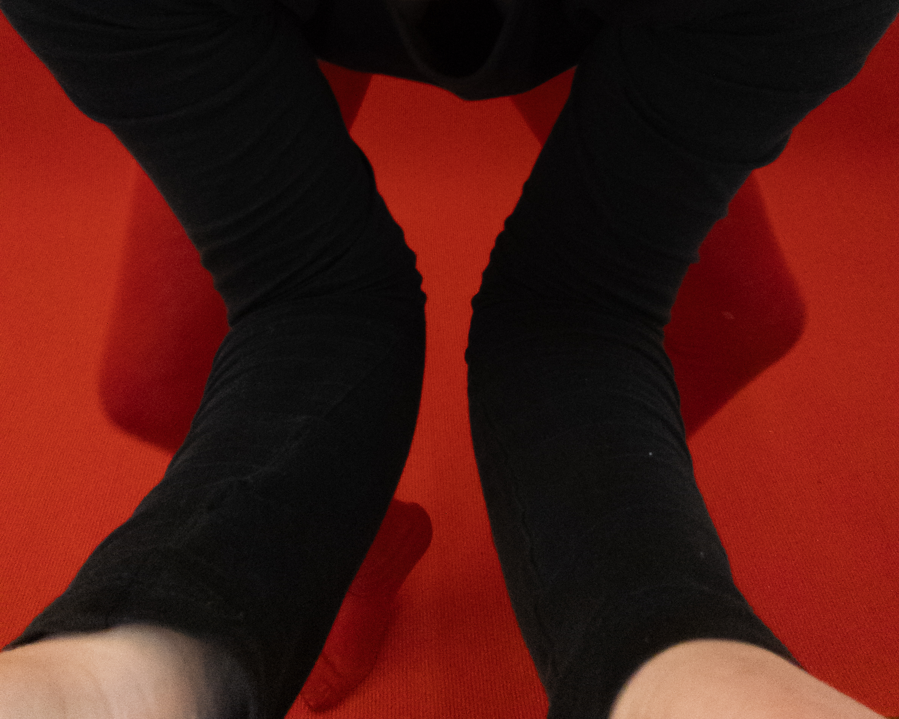

a maker-do-er. speaks in the first person, searches through the instinct to stay still and displaced;
works with and through the body through mark-making, photography and video using paper, fabric and wood; i see myself from outside through the objects i make. often measuring the body through its tracing on the material, keeping focus on its form and tension;
motivated by relationships between you, me, the chair on which i sit and the spaces where we stand. struggling to differentiate, looks for ways to dissipate borders with attention to subjective experience;
occupied with somatic resistances which reflect into ways of being and making; with singularity and the necessity of building aesth(ethics) through an ontological methodology; with re-materializing the body and the space it leaves empty;
thinks of the 'i' plurally, looks forward to holding hands with the world.
